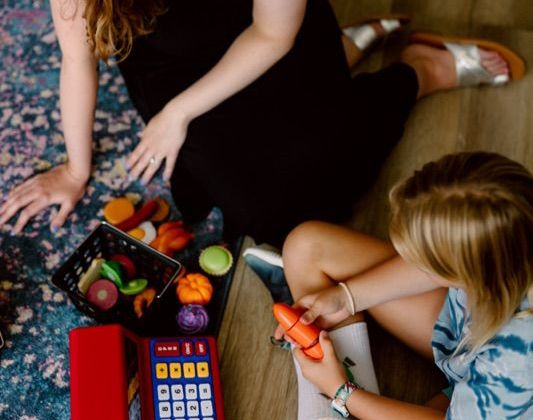
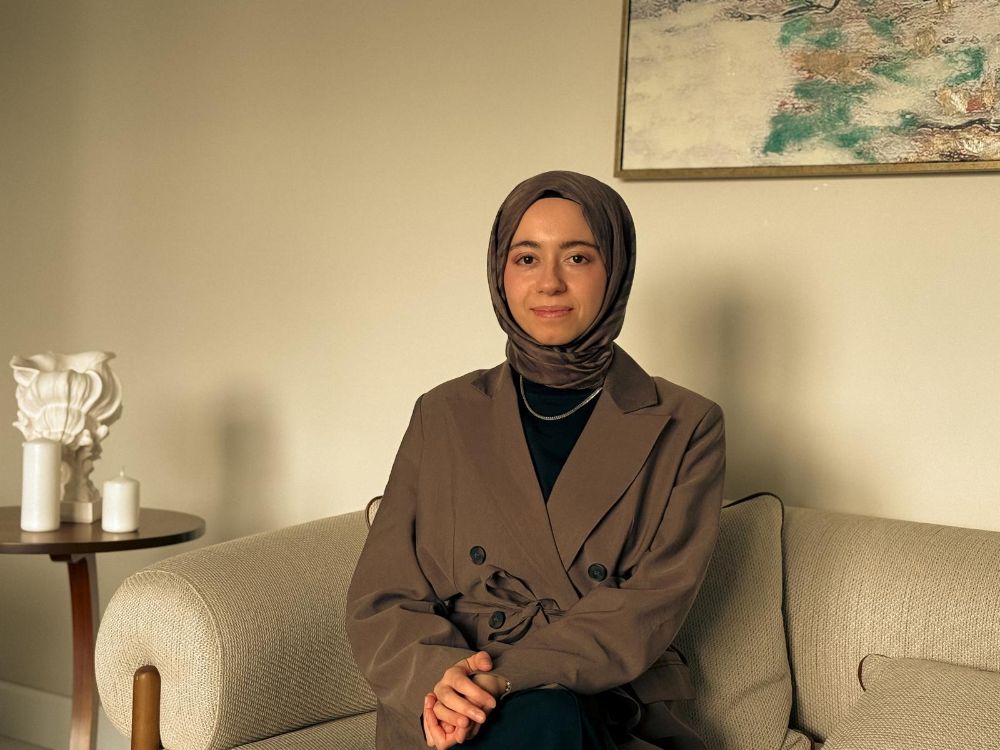
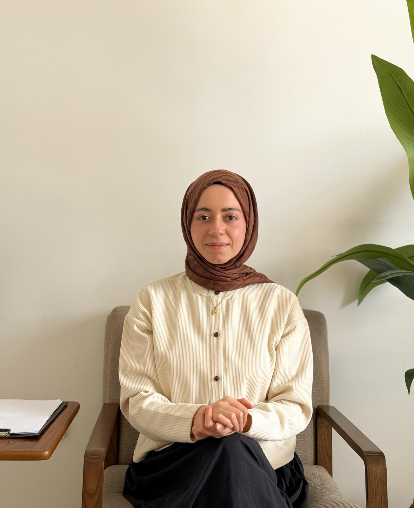
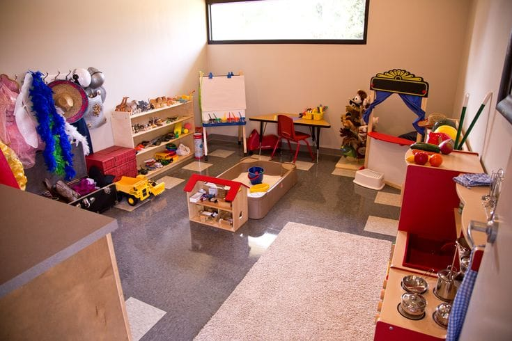
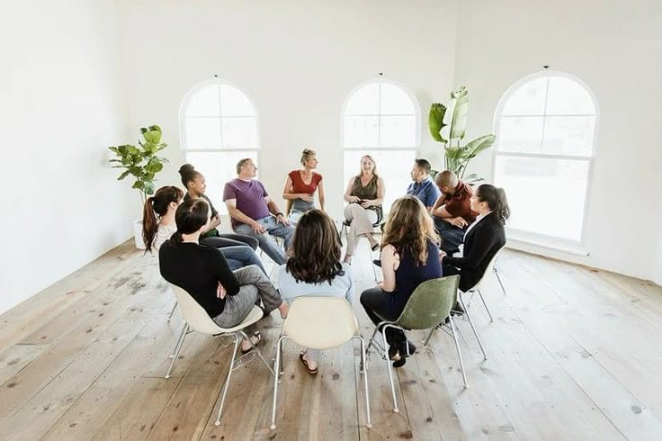

Çocuk Merkezli Oyun Danışmanlığı
"Oyun çocuğun dili, oyuncaklar ise kelimeleridir." Çocuğun iç dünyasını anlamak için oyunun gücü.
Devamını OkuKendinizi keşfetmek ve ruhsal dengenizi yeniden inşa etmek için bilimsel temelli uzman desteği.


Lisans eğitimini Yıldız Teknik Üniversitesi Psikolojik Danışmanlık ve Rehberlik bölümünde tamamlayan Tuğba Yılmaz, klinik psikoloji uzmanlığını Rumeli Üniversitesi Klinik Psikoloji yüksek lisans programı ile almıştır. Akademik gelişimi süresince, teorik bilgisini klinik pratikle birleştirmek adına iki yıl boyunca bir psikiyatrist eşliğinde çok sayıda klinik vaka gözlemlemiş ve staj süreçlerini başarıyla tamamlamıştır.
Devamını OkuDepresyon, kaygı, travma ve yaşam krizleriyle başa çıkmak için yetişkinlere özel, güvenli bir içsel yolculuk.
Detaylı İnceleMekan sınırlaması olmadan, evinizin konforunda ve etik çerçevede profesyonel psikolojik destek.
Detaylı İncele
Oyun danışmanlığı yöntemleriyle çocukların duygu dünyasını anlamlandırma ve davranışsal sorunları çözümleme süreci.
Detaylı İnceleKimlik arayışı, sınav kaygısı ve aile içi çatışmalarla geçen bu hassas dönemde gençlere rehberlik.
Detaylı İncele
Yalnız olmadığınızı hissettiren, paylaşımın ve etkileşimin iyileştirici gücünü kullanan atölye çalışmaları.
Detaylı İnceleİş dünyasında psikolojik sağlamlık, liderlik ve verimli ekip yönetimi üzerine profesyonel çözümler.
Detaylı İncele
"Oyun çocuğun dili, oyuncaklar ise kelimeleridir." Çocuğun iç dünyasını anlamak için oyunun gücü.
Devamını OkuBireysel danışmanlıkta karar verme süreci, içsel çatışmalarla çalışmak ve ilişkinin geleceğini belirlemek üzerine.
Devamını OkuBireysel danışmanlık süreci kişinin ihtiyacına, sorunun yapısına ve belirlenen hedeflere göre değişiklik gösterir.
Evet, yapılan araştırmalar online danışmanlığın birçok durumda yüz yüze danışmanlık kadar etkili olduğunu göstermektedir.